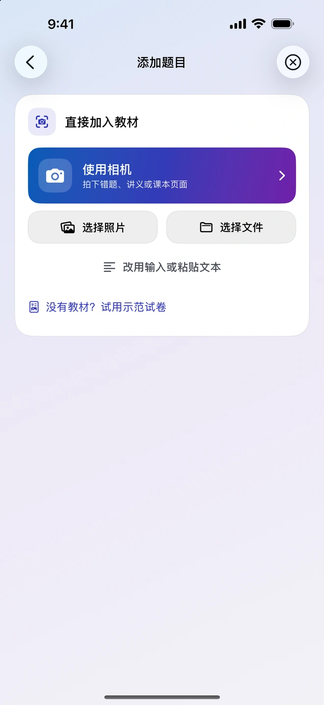
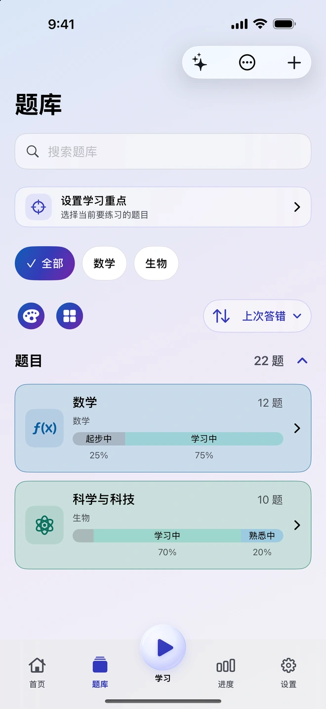
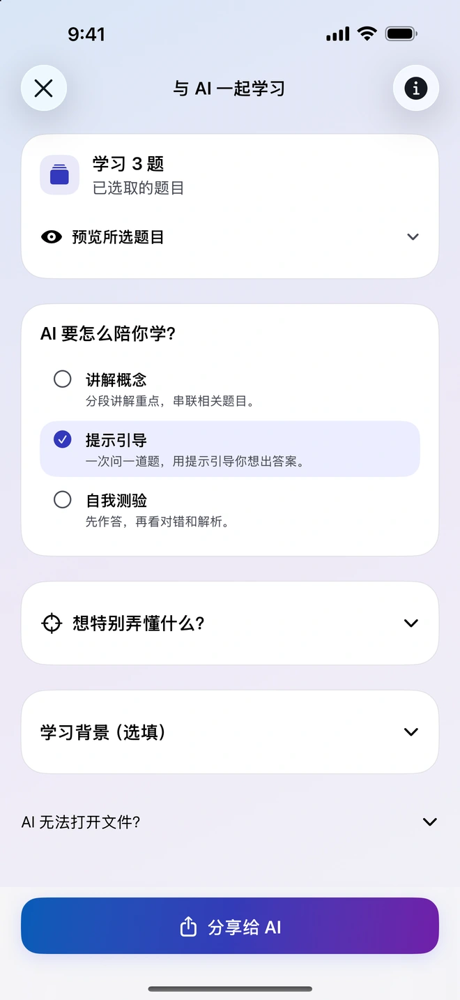
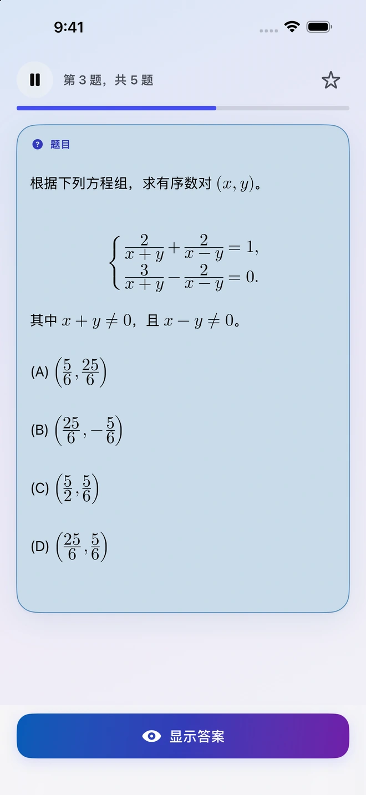
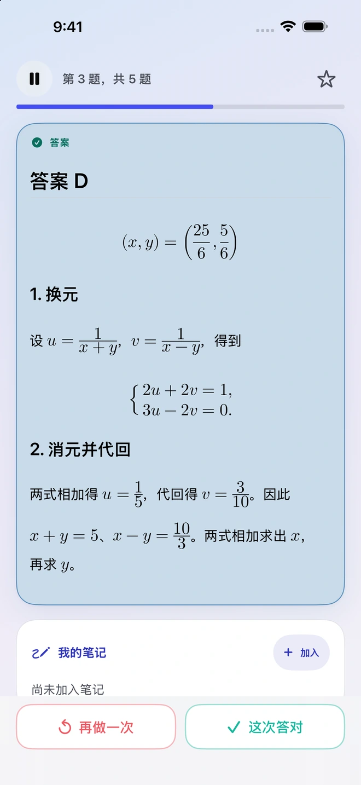
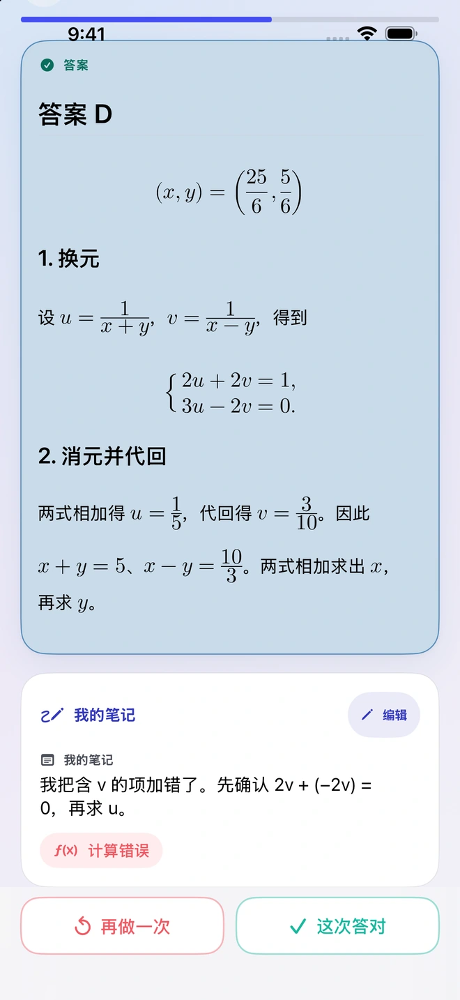
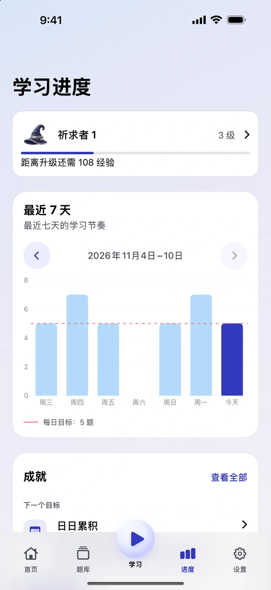

用手上的教材出题
添加照片、PDF、文档或笔记。Quiz Invoker 会整理教材和出题指示，让你分享给所选的兼容外部 AI 应用。查看并导入返回结果，再把想练的题目加入题库。


收下真正想复习的题目，过几天再回来看看自己还记得多少。
添加照片、PDF、文档或笔记。Quiz Invoker 会整理教材和出题指示，让你分享给所选的兼容外部 AI 应用。查看并导入返回结果，再把想练的题目加入题库。
把选好的题目分享给你选择的外部 AI 应用，请它讲解概念、一步步给提示，或测试你的理解。要分享哪些文件或笔记，由你决定。

先想好解法，再翻开答案，判断自己记得多少。答错时，可以记下卡在哪一步，下次遇到同一题就能回顾。


七天进度会显示最近的练习量和每日目标。笔记随题目保留，之后可以一起回顾答案和当时的想法。


整理题库和练习可以离线进行，也不需要 Quiz Invoker 帐号。Quiz Invoker 在设备上准备文件和指示，实际的 AI 处理由你选择的外部应用负责。